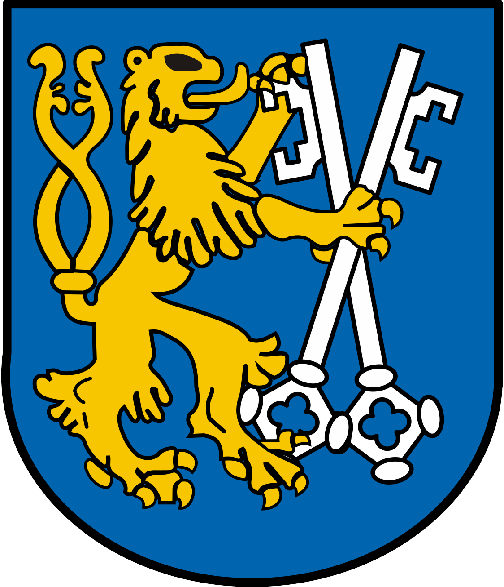
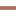

<!doctype html>
<html lang="en">
    <head>
        <meta charset="utf-8">
        <meta http-equiv="X-UA-Compatible" content="IE=edge">
        <meta name="viewport" content="initial-scale=1,user-scalable=no,maximum-scale=1,width=device-width">
        <meta name="mobile-web-app-capable" content="yes">
        <meta name="apple-mobile-web-app-capable" content="yes">
        <link rel="stylesheet" href="css/leaflet.css">
        <link rel="stylesheet" href="css/L.Control.Layers.Tree.css">
        <link rel="stylesheet" href="css/qgis2web.css">
        <link rel="stylesheet" href="css/fontawesome-all.min.css">
        <link rel="stylesheet" href="css/leaflet-measure.css">
        <link rel="stylesheet" href="https://cdn.jsdelivr.net/npm/leaflet-control-layers-tree/dist/L.Control.Layers.Tree.css" />
        <link rel="stylesheet" href="https://cdn.jsdelivr.net/npm/leaflet.polylinedecorator@1.6.0/dist/leaflet.polylinedecorator.min.css">
        <link rel="stylesheet" href="css/legend.css" />
        <link rel="stylesheet" href="css/station-label.css" />
        
        <style>
        html, body, #map {
            width: 100%;
            height: 100%;
            padding: 0;
            margin: 0;
        }
        .info.legend {
            padding: 6px 8px;
            font: 14px/16px Arial, Helvetica, sans-serif;
            background: white;
            background: rgba(255,255,255,0.8);
            box-shadow: 0 0 15px rgba(0,0,0,0.2);
            border-radius: 5px;
        }
        .info.legend i {
            width: 18px;
            height: 18px;
            float: left;
            margin-right: 8px;
            opacity: 0.7;
        }
        </style>
        <title>Infrastruktura komunikacyjna w Legnicy</title>
    </head>
    <body>
        <div id="map">
        </div>
        <script src="js/qgis2web_expressions.js"></script>
        <script src="js/leaflet.js"></script>
        <script src="js/L.Control.Layers.Tree.min.js"></script>
        <script src="js/multi-style-layer.js"></script>
        <script src="js/leaflet.rotatedMarker.js"></script>
        <script src="js/leaflet.pattern.js"></script>
        <script src="js/leaflet-hash.js"></script>
        <script src="js/Autolinker.min.js"></script>
        <script src="js/rbush.min.js"></script>
        <script src="js/labelgun.min.js"></script>
        <script src="js/labels.js"></script>
        <script src="js/leaflet-measure.js"></script>
        <script src="data/Liniekolejowe_1.js"></script>
        <script src="data/Stacjekolejowe_3.js"></script>
        <script src="data/Drogirowerowe_4.js"></script>
        <script src="data/Trasyautobusowe_5.js"></script>
        <script src="data/Przystankiautobusowe_6.js"></script>
        <script src="data/Dworceautobusowe_1.js"></script>
        <script src="data/Parkingi_0.js"></script>
        <script src="https://cdn.jsdelivr.net/npm/leaflet-control-layers-tree/dist/L.Control.Layers.Tree.min.js"></script>
        <script src="https://cdn.jsdelivr.net/npm/leaflet.polylinedecorator@1.6.0/dist/leaflet.polylinedecorator.min.js"></script>
        <script src="data/Stacjekolejowe_0.js"></script>
        <script src="https://cdn.jsdelivr.net/npm/leaflet-maskcanvas@1.0.0/src/L.GridLayer.MaskCanvas.min.js"></script>
        <script>
            
        var map = L.map('map', {
            zoomControl:false, maxZoom:28, minZoom:1
        }).fitBounds([[51.11832900435613,15.951937827881975],[51.303773232196605,16.37558732828802]]);
        var hash = new L.Hash(map);
        map.attributionControl.setPrefix('<a href="https://github.com/tomchadwin/qgis2web" target="_blank">qgis2web</a> &middot; <a href="https://leafletjs.com" title="A JS library for interactive maps">Leaflet</a> &middot; <a href="https://qgis.org">QGIS</a>');
        var autolinker = new Autolinker({truncate: {length: 30, location: 'smart'}});
        
        function removeEmptyRowsFromPopupContent(content, feature) {
         var tempDiv = document.createElement('div');
         tempDiv.innerHTML = content;
         var rows = tempDiv.querySelectorAll('tr');
         for (var i = 0; i < rows.length; i++) {
             var td = rows[i].querySelector('td.visible-with-data');
             var key = td ? td.id : '';
             if (td && td.classList.contains('visible-with-data') && feature.properties[key] == null) {
                 rows[i].parentNode.removeChild(rows[i]);
             }
         }
         return tempDiv.innerHTML;
        }
        
		function addClassToPopupIfMedia(content, popup) {
			var tempDiv = document.createElement('div');
			tempDiv.innerHTML = content;
			if (tempDiv.querySelector('td img')) {
				popup._contentNode.classList.add('media');
					
					setTimeout(function() {
						popup.update();
					}, 10);
			} else {
				popup._contentNode.classList.remove('media');
			}
		}
        var title = new L.Control({'position':'topleft'});
            
        title.onAdd = function (map) {
            this._div = L.DomUtil.create('div', 'info');
            this.update();
            return this._div;
        };
        title.update = function () {
            this._div.innerHTML = '<h2>Infrastruktura komunikacyjna w Legnicy</h2>';
        };
        title.addTo(map);
        var zoomControl = L.control.zoom({
            position: 'bottomright'
        }).addTo(map);
        var measureControl = new L.Control.Measure({
            position: 'bottomright',
            primaryLengthUnit: 'meters',
            secondaryLengthUnit: 'kilometers',
            primaryAreaUnit: 'sqmeters',
            secondaryAreaUnit: 'hectares'
        });
        measureControl.addTo(map);
        document.getElementsByClassName('leaflet-control-measure-toggle')[0].innerHTML = '';
        document.getElementsByClassName('leaflet-control-measure-toggle')[0].className += ' fas fa-ruler';
        var bounds_group = new L.featureGroup([]);
        function setBounds() {
            map.setMaxBounds(map.getBounds());
        }
        map.createPane('pane_Mapka_0');
        map.getPane('pane_Mapka_0').style.zIndex = 400;
        var layer_Mapka_0 = L.tileLayer('https://server.arcgisonline.com/ArcGIS/rest/services/World_Topo_Map/MapServer/tile/{z}/{y}/{x}', {
            pane: 'pane_Mapka_0',
            opacity: 1.0,
            attribution: '',
            minZoom: 1,
            maxZoom: 28,
            minNativeZoom: 0,
            maxNativeZoom: 18
        });
        layer_Mapka_0;
        map.addLayer(layer_Mapka_0);
            

        function pop_Liniekolejowe_1(feature, layer) {
            var popupContent = '<table>\
                    <tr>\
                        <td colspan="2">' + (feature.properties['fid'] !== null ? autolinker.link(feature.properties['fid'].toLocaleString()) : '') + '</td>\
                    </tr>\
                </table>';
            var content = removeEmptyRowsFromPopupContent(popupContent, feature);
			layer.on('popupopen', function(e) {
				addClassToPopupIfMedia(content, e.popup);
			});
			layer.bindPopup(content, { maxHeight: 400 });
        }
            

        function style_Liniekolejowe_1_0() {
            return {
                pane: 'pane_Liniekolejowe_1',
                opacity: 1,
                color: 'rgb(186, 27, 232)',
                dashArray: '',
                lineCap: 'round',
                lineJoin: 'round',
                weight: 1.0,
                fillOpacity: 0,
                interactive: false,
            }
        }

        map.createPane('pane_Liniekolejowe_1');
        map.getPane('pane_Liniekolejowe_1').style.zIndex = 401;
        map.getPane('pane_Liniekolejowe_1').style['mix-blend-mode'] = 'normal';
        var layer_Liniekolejowe_1 = new L.geoJson.multiStyle(json_Liniekolejowe_1, {
            attribution: '',
            interactive: true,
            dataVar: 'json_Liniekolejowe_1',
            layerName: 'layer_Liniekolejowe_1',
            pane: 'pane_Liniekolejowe_1',
            onEachFeature: pop_Liniekolejowe_1,
            styles: [style_Liniekolejowe_1_0]
        });
        bounds_group.addLayer(layer_Liniekolejowe_1);
        map.addLayer(layer_Liniekolejowe_1);
        
            
            
            
            
        map.createPane('pane_Dostpno_2');
        map.getPane('pane_Dostpno_2').style.zIndex = 402;
        var img_Dostpno_2 = 'data/Dostpno_2.png';
        var img_bounds_Dostpno_2 = [[51.161049,16.087968],[51.247800708,16.232259964]];
        var layer_Dostpno_2 = new L.imageOverlay(img_Dostpno_2,
                                              img_bounds_Dostpno_2,
                                              {pane: 'pane_Dostpno_2'});
        bounds_group.addLayer(layer_Dostpno_2);
        map.addLayer(layer_Dostpno_2);
            
            
            
        
    
        function pop_Drogirowerowe_4(feature, layer) {
            var popupContent = '<table>\
                </table>';
            var content = removeEmptyRowsFromPopupContent(popupContent, feature);
			layer.on('popupopen', function(e) {
				addClassToPopupIfMedia(content, e.popup);
			});
			layer.bindPopup(content, { maxHeight: 400 });
        }
   
            
        function style_Drogirowerowe_4_0() {
            return {
                pane: 'pane_Drogirowerowe_4',
                opacity: 1,
                color: 'rgba(0,0,0,1.0)',
                dashArray: '',
                lineCap: 'round',
                lineJoin: 'round',
                weight: 3.0,
                fillOpacity: 0,
                interactive: false,
            }
        }
        function style_Drogirowerowe_4_1() {
            return {
                pane: 'pane_Drogirowerowe_4',
                opacity: 1,
                color: 'rgba(135,58,58,1.0)',
                dashArray: '',
                lineCap: 'round',
                lineJoin: 'round',
                weight: 2.0,
                fillOpacity: 0,
                interactive: false,
            }
        }
        map.createPane('pane_Drogirowerowe_4');
        map.getPane('pane_Drogirowerowe_4').style.zIndex = 404;
        map.getPane('pane_Drogirowerowe_4').style['mix-blend-mode'] = 'normal';
        var layer_Drogirowerowe_4 = new L.geoJson.multiStyle(json_Drogirowerowe_4, {
            attribution: '',
            interactive: false,
            dataVar: 'json_Drogirowerowe_4',
            layerName: 'layer_Drogirowerowe_4',
            pane: 'pane_Drogirowerowe_4',
            onEachFeature: pop_Drogirowerowe_4,
            styles: [style_Drogirowerowe_4_0,style_Drogirowerowe_4_1,]
        });
        bounds_group.addLayer(layer_Drogirowerowe_4);
        map.addLayer(layer_Drogirowerowe_4);
        
       
            
        var layer_Stacjekolejowe_0 = L.geoJson(json_Stacjekolejowe_0, {
            pointToLayer: function (feature, latlng) {
                var marker = L.marker(latlng, {
                    icon: L.icon({
                        iconUrl: 'markers/rail.svg',
                        iconSize: [20, 20]
                    })
                });

                var label = L.marker(latlng, {
                    icon: L.divIcon({
                        className: 'station-label', 
                        html: feature.properties.Nazwa, 
                        iconSize: [100, 20], 
                        iconAnchor: [55, -10] 
                    })
                });

                marker.bindPopup('<b>Nazwa stacji:</b> ' + feature.properties.Nazwa + '<br>' +
                                 '<b><br>Zdjęcie:</br></b>' + feature.properties.Zdjecie);

                return L.layerGroup([marker, label]);

            },
            onEachFeature: function (feature, layer) {
            }
        }).addTo(map);

        bounds_group.addLayer(layer_Stacjekolejowe_0);
        map.addLayer(layer_Stacjekolejowe_0);
            
            
        function pop_Trasyautobusowe_5(feature, layer) {
            var popupContent = '<table>\
                    <tr>\
                        <th scope="row">Numer</th>\
                        <td>' + (feature.properties['Numer'] !== null ? autolinker.link(feature.properties['Numer'].toLocaleString()) : '') + '</td>\
                    </tr>\
                </table>';
            var content = removeEmptyRowsFromPopupContent(popupContent, feature);
			layer.on('popupopen', function(e) {
				addClassToPopupIfMedia(content, e.popup);
			});
			layer.bindPopup(content, { maxHeight: 400 });
        }

        function style_Trasyautobusowe_5_0(feature) {
            switch(String(feature.properties['Numer'])) {
                case '1':
                    return {
                pane: 'pane_Trasyautobusowe_5',
                opacity: 1,
                color: 'rgba(231,113,72,1.0)',
                dashArray: '',
                lineCap: 'round',
                lineJoin: 'bevel',
                weight: 4.0,
                fillOpacity: 0,
                interactive: true,
            }
                    break;
                case '2':
                    return {
                pane: 'pane_Trasyautobusowe_5',
                opacity: 1,
                color: 'rgba(61,167,90,1.0)',
                dashArray: '',
                lineCap: 'square',
                lineJoin: 'bevel',
                weight: 4.0,
                fillOpacity: 0,
                interactive: true,
            }
                    break;
                case '3':
                    return {
                pane: 'pane_Trasyautobusowe_5',
                opacity: 1,
                color: 'rgba(232,113,141,1.0)',
                dashArray: '',
                lineCap: 'square',
                lineJoin: 'bevel',
                weight: 4.0,
                fillOpacity: 0,
                interactive: true,
            }
                    break;
                case '4':
                    return {
                pane: 'pane_Trasyautobusowe_5',
                opacity: 1,
                color: 'rgba(141,90,153,1.0)',
                dashArray: '',
                lineCap: 'square',
                lineJoin: 'bevel',
                weight: 4.0,
                fillOpacity: 0,
                interactive: true,
            }
                    break;
                case '5':
                    return {
                pane: 'pane_Trasyautobusowe_5',
                opacity: 1,
                color: 'rgba(243,166,178,1.0)',
                dashArray: '',
                lineCap: 'square',
                lineJoin: 'bevel',
                weight: 4.0,
                fillOpacity: 0,
                interactive: true,
            }
                    break;
                case '8':
                    return {
                pane: 'pane_Trasyautobusowe_5',
                opacity: 1,
                color: 'rgba(213,180,60,1.0)',
                dashArray: '',
                lineCap: 'square',
                lineJoin: 'bevel',
                weight: 4.0,
                fillOpacity: 0,
                interactive: true,
            }
                    break;
                case '15':
                    return {
                pane: 'pane_Trasyautobusowe_5',
                opacity: 1,
                color: 'rgba(164,113,88,1.0)',
                dashArray: '',
                lineCap: 'square',
                lineJoin: 'bevel',
                weight: 4.0,
                fillOpacity: 0,
                interactive: true,
            }
                    break;
                case '23':
                    return {
                pane: 'pane_Trasyautobusowe_5',
                opacity: 1,
                color: 'rgba(133,182,111,1.0)',
                dashArray: '',
                lineCap: 'square',
                lineJoin: 'bevel',
                weight: 4.0,
                fillOpacity: 0,
                interactive: true,
            }
                    break;
                case '24':
                    return {
                pane: 'pane_Trasyautobusowe_5',
                opacity: 1,
                color: 'rgba(125,139,143,1.0)',
                dashArray: '',
                lineCap: 'square',
                lineJoin: 'bevel',
                weight: 4.0,
                fillOpacity: 0,
                interactive: true,
            }
                    break;
            }
        }
        map.createPane('pane_Trasyautobusowe_5');
        map.getPane('pane_Trasyautobusowe_5').style.zIndex = 405;
        map.getPane('pane_Trasyautobusowe_5').style['mix-blend-mode'] = 'normal';
        var layer_Trasyautobusowe_5 = new L.geoJson(json_Trasyautobusowe_5, {
            attribution: '',
            interactive: true,
            dataVar: 'json_Trasyautobusowe_5',
            layerName: 'layer_Trasyautobusowe_5',
            pane: 'pane_Trasyautobusowe_5',
            onEachFeature: pop_Trasyautobusowe_5,
            style: style_Trasyautobusowe_5_0,
        });
            
        bounds_group.addLayer(layer_Trasyautobusowe_5);
        map.addLayer(layer_Trasyautobusowe_5);
            
            
            
        function pop_Przystankiautobusowe_6(feature, layer) {
            var popupContent = '<table>\
                    <tr>\
                        <th scope="row">Nazwa</th>\
                        <td>' + (feature.properties['Nazwa'] !== null ? autolinker.link(feature.properties['Nazwa'].toLocaleString()) : '') + '</td>\
                    </tr>\
                    <tr>\
                        <th scope="row">Wiata</th>\
                        <td>' + (feature.properties['Wiata'] !== null ? autolinker.link(feature.properties['Wiata'].toLocaleString()) : '') + '</td>\
                    </tr>\
                    <tr>\
                        <th scope="row">Ławka</th>\
                        <td>' + (feature.properties['Ławka'] !== null ? autolinker.link(feature.properties['Ławka'].toLocaleString()) : '') + '</td>\
                    </tr>\
                </table>';
            var content = removeEmptyRowsFromPopupContent(popupContent, feature);
			layer.on('popupopen', function(e) {
				addClassToPopupIfMedia(content, e.popup);
			});
			layer.bindPopup(content, { maxHeight: 400 });
        }


        function style_Przystankiautobusowe() {
            return {
                pane: 'pane_Przystankiautobusowe_6',
                 rotationAngle: 0.0,
                 rotationOrigin: 'center center',
                 icon: L.icon({  
                     iconUrl: 'markers/bus.svg', 
                     iconSize: [15, 15], 
                    
                 }),
                 interactive: true,
             };
        }
            
            
        map.createPane('pane_Przystankiautobusowe_6');
        map.getPane('pane_Przystankiautobusowe_6').style.zIndex = 406;
        map.getPane('pane_Przystankiautobusowe_6').style['mix-blend-mode'] = 'normal';
            
        var layer_Przystankiautobusowe_6 = L.geoJson(json_Przystankiautobusowe_6, {
            attribution: '',
            interactive: true,
            dataVar: 'json_Przystankiautobusowe_6',
            layerName: 'layer_Przystankiautobusowe_6',
            pane: 'pane_Przystankiautobusowe_6',
            onEachFeature: pop_Przystankiautobusowe_6,
            pointToLayer: function (feature, latlng) { 
                return L.marker(latlng, style_Przystankiautobusowe()); 
            }
        });

        bounds_group.addLayer(layer_Przystankiautobusowe_6);
        map.addLayer(layer_Przystankiautobusowe_6);
                bounds_group.addLayer(layer_Przystankiautobusowe_6);
                map.addLayer(layer_Przystankiautobusowe_6);
            
        
        var availabilityStyles = {
            '1': { label: 'Bardzo dobra', color: '#00441b' },
            '2': { label: 'Dobra', color: '#2a924b' },
            '3': { label: 'Średnia', color: '#7bc77c' },
            '4': { label: 'Słaba', color: '#c9eac2' },
            '5': { label: 'Bardzo słaba', color: '#f7fcf5' }
        };

        function createAvailabilityLegendHTML() {
            var html = 'Dostępność<br /><table>';
            for (var key in availabilityStyles) {
                var style = availabilityStyles[key];
                html += '<tr><td style="text-align: center;"><span style="background-color: ' + style.color + '; display: inline-block; width: 10px; height: 10px;"></span></td><td>' + style.label + '</td></tr>';
            }
            html += '</table>';
            return html;
        }

        var overlaysTree = {
            label: 'Warstwy',
            children: [
                { label: 'Przystanki autobusowe', layer: layer_Przystankiautobusowe_6 }, 
                { label: 'Trasy autobusowe', layer: layer_Trasyautobusowe_5 },          
                { label: 'Stacje kolejowe', layer: layer_Stacjekolejowe_0 },
                { label: 'Linie kolejowe', layer: layer_Liniekolejowe_1 }, 
                { label: 'Drogi rowerowe', layer: layer_Drogirowerowe_4 }, 
                { label: 'Dostępność', layer: layer_Dostpno_2 },                        
                { label: "Mapa bazowa", layer: layer_Mapka_0, radioGroup: 'bm' },
                
            ]
        };
            
        var overlaysTree1 = {
            label: 'Warstwy',
            children: [
                { label: ' Przystanki autobusowe', layer: layer_Przystankiautobusowe_6 },
                { label: 'Trasy autobusowe<br /><table><tr><td style="text-align: center;"></td><td>1</td></tr><tr><td style="text-align: center;"></td><td>2</td></tr><tr><td style="text-align: center;"></td><td>3</td></tr><tr><td style="text-align: center;"></td><td>4</td></tr><tr><td style="text-align: center;"></td><td>5</td></tr><tr><td style="text-align: center;"></td><td>8</td></tr><tr><td style="text-align: center;"></td><td>15</td></tr><tr><td style="text-align: center;"></td><td>23</td></tr><tr><td style="text-align: center;"></td><td>24</td></tr></table>', layer: layer_Trasyautobusowe_5 },
                { label: ' Stacje kolejowe', layer: layer_Stacjekolejowe_0 },
                { label: '<div style="display: inline-block; background-color: rgb(186, 27, 232); width: 20px; height: 3px; vertical-align: middle; margin-right: 5px;"></div>Linie kolejowe', layer: layer_Liniekolejowe_1 },
                { label: ' Drogi rowerowe', layer: layer_Drogirowerowe_4 },
                { label: createAvailabilityLegendHTML(), layer: layer_Dostpno_2 }, 
                { label: "Mapa bazowa", layer: layer_Mapka_0, radioGroup: 'bm' },
                
            ]
        };

        var lay = L.control.layers.tree(null, overlaysTree, {
            selectorBack: false,
            collapsed: false
        });
        lay.addTo(map);

            
            
       
        
        L.control.scale({
            position: 'bottomleft',
            metric: true,
            imperial: false,
            maxWidth: 200
        }).addTo(map);
        
        var coordinatesContainer = L.DomUtil.create('div', 'coordinates-container');
        document.body.appendChild(coordinatesContainer);

        
        var coordinatesDiv = L.DomUtil.create('div', 'coordinates-display');
        coordinatesContainer.appendChild(coordinatesDiv); 

        
        map.on('mousemove', function(e) {
            var lat = e.latlng.lat.toFixed(6); 
            var lng = e.latlng.lng.toFixed(6);
            coordinatesDiv.innerHTML = 'Szerokość: ' + lat + ', Długość: ' + lng;
        });
            
        var style = document.createElement('style');
        style.innerHTML = `
        .coordinates-container {
            position: absolute;
            bottom: 10px;
            left: 0;
            width: 100%;
            text-align: center;
            z-index: 1000;
        }

        .coordinates-display {
            display: inline-block;
            padding: 5px 10px;
            background-color: rgba(255, 255, 255, 0.8);
            border: 1px solid #ccc;
            border-radius: 5px;
            font-family: Arial, sans-serif;
            font-size: 9px;
        }
        `;
        document.head.appendChild(style);
            
            
        var legend = L.control({ position: 'bottomleft' });

        legend.onAdd = function (map) {
            var div = L.DomUtil.create('div', 'info legend');
            div.style.padding = '10px';
            div.style.backgroundColor = 'white';
            div.style.borderRadius = '5px';
            div.style.border = '1px solid #ccc';
            return div; 
        };

        legend.addTo(map);

            
        function updateLegend() {
            var legendDiv = legend.getContainer();
            if (legendDiv) {
                var innerHTML = "<b>Legenda</b><br><br>";
                for (var i = 0; i < overlaysTree1.children.length; i++) {
                    var child = overlaysTree1.children[i];
                    if (child.label && !child.radioGroup && map.hasLayer(child.layer)) {
                        innerHTML += child.label + "<br><br>";
                    }
                }
                legendDiv.innerHTML = innerHTML;
            }    
        }

            
        map.on('overlayadd', updateLegend);
        map.on('overlayremove', updateLegend);
        updateLegend();
            
            
        
            
        
        </script>
    </body>
</html>
